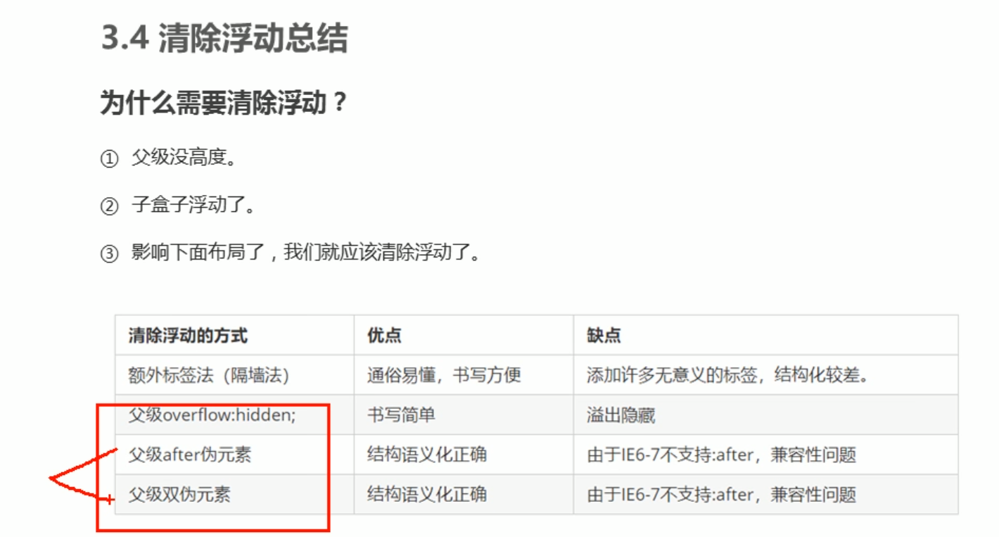

标准流
所谓的标准流：就是标签按照默认的方式排序。
为什么需要浮动
总结：很多布局样式用标准流没有办法完成，此时可以利用浮动完成布局，因为浮动可以改变元素标签默认的排序方式。
浮动最典型的应用：可以让多个块元素一行排序显示。
网页布局第一准则（重要）：多个块元素纵向排列找 标准流 ，多个块元素横向排列找 浮动。
浮动（float）
语法：
选择器{ float:属性值;}
值 描述
left 元素向左浮动。
right 元素向右浮动。
none 默认值。元素不浮动，并会显示在其在文本中出现的位置。
inherit 规定应该从父元素继承 float 属性的值。
float属性用于浮动框，将其移动到一边，直到左边边缘或者右边边缘触及包含块或一个浮动边缘。
案例：
/* 靠左浮动 */
.box{
width: 300px;
height: 200px;
background-color: pink;
float: left;
}
/* 靠右浮动 */
.box1{
width: 300px;
height: 200px;
background-color: pink;
float: right;
}
box
box1
浮动特性（非常重要）
设置了浮动（float）的元素最重要特性：
1.脱离标准流的控制（浮）移动到指定位置（动），（俗称 脱标）
2.浮动的盒子不再保留原先的位置（原先的位置会被标准流占用）
注意：设置了浮动的元素，漂浮在普通流上面，不占位置（脱标）
3.如果多个盒子设置了浮动，则它们会按照属性值一行内显示，并且顶端对齐排列
注意：浮动的元素是相互贴靠在一起的（不会有缝隙），如果父级宽度装不下就会另起一行对齐显示。
4.浮动元素具有行内块元素特性。
任何元素都可以浮动，不管原先是什么模式的元素，添加浮动之后都具有行内块元素相似的特性。
浮动与原始经常和标准流父级搭配使用
先用标准流的父级元素位列上下位置，之后内部子元素采取浮动排列左右位置，复合网页布局第一准则
浮动布局注意点
1.浮动和标准流的父盒子搭配
先用标准流的父元素排列上下位置，之后内部子元素采取浮动排列左右位置
一个元素浮动了，理论上其余的兄弟元素也要浮动。
浮动的盒子只会影响浮动盒子后面的标准流，不会影响前面的标准流。
清除浮动
为什么需要清除浮动？
由于父级盒子很多情况下不方便给高度，但是子盒子浮动又不占用位置，最后父级盒子高度为0时，就会影响下面的标准流盒子。
清除浮动方法
额外标签法（clear），也称为 隔墙法，时w3c推荐的做法
额外标签法，会在浮动元素末尾添加一个空标签，如：
【div style="clear:both">/div】
注意：要求这个新的空标签必须时块级元素！
优点：通俗易懂，方便书写
缺点：添加许多无意义的标签，结构化差
父级添加overflow
可以给父级添加overflow属性，将值设置为hidden scroll 或auto。
注意：是给父元素添加。
优点：代码简洁
缺点：无法显示溢出部分
:after伪元素（父盒子调用）
代码：
/* 清除浮动（父盒子调用） */
.clearfix{
content: "";
display: block;
height: 0;
clear: both;
visibility: hidden;
}
.clearfix{
/* 兼容ie6,7专用 */
*zoom: 1;
}
双伪元素清除浮动
代码：
/* 清除浮动2（父盒子调用） */
.clearfix::before,.clearfix:after{
content: "";
display: table;
}
.clearfix::after{
clear: both;
}
.clearfix{
/* ie6,7专用 */
*zoom: 1;
}
